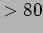
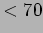
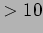
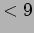
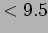
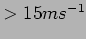
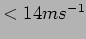
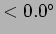
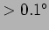
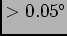

Next: Analysis of results
Up: Weather
Previous: Weather
Contents
The Weather Monitoring System (WMS) provides feeds of various meteorological data from a weather station on site located XXXm from the telescope enclosure. (some basic info about the thing like who built it etc). Data is provided to the RCS at a cadence of around 5 seconds. The RCS filters this data and uses a set of rules (Table. 1) to decide if the weather should be classified as good in which case (all things being otherwise okay) observing may proceed, or bad in which case observing may not proceed or if already underway should be stopped and the telescope and enclosure made safe.
Weather shutdowns based on WMS data are triggered by any of the following sources:-
- High humidity can lead to condensation on cold surfaces (mirror, electricals) and is an indicator of cloud and potential precipitation.
- Rain causes wetting of all equipment, this has to be avoided especially on sensitive optical, electrical and hydraulic systems.
- Moisture fraction is indicated by a digital sensor and indicates that rain or condensation is occuring or has recently occurred but not yet cleared sufficiently.
- Cold temperatures lead to ice which can cause the enclosure portals to stick and thus put considerable strain on the motors and electrical supply if an attempt was made to open these.
- Wind gusts can cause damage to telescope structure and attached instruments. Moderate wind can also lead to poor tracking performance due to wind shake.
Table 1) summarizes the rules currently (January 2008) in force for weather clear and alert triggers. A weather variable crossing its alert level signals bad weather. In order to clear (signal good weather) the variable must pass the primary clear level and remain below the secondary level for at least the time specified by the stability parameter. All variables must be in the clear state for overall Good weather. Any variable in its alert state indicates bad weather. Currently all rules have a 30 minute clearing stability time but this can be changed.
Table 1:
Definitions of alert and clear threshold levels for triggering good/bad weather conditions. A variable crossing its alert level signals bad weather. In order to clear (signal good weather) the variable must pass the primary clear level and remain below secondary level for at least the time specified by stability parameter. All variables must be in the clear state for overall Good weather. Any variable in its alert state indicates bad weather.
| Weather variable triggering conditions |
| Variable |
Alert threshold |
Primary clear level |
Secondary clear level |
Stability |
| Humidity |
% |
% |
% |
30 min |
| Moisture |
% |
% |
% |
30 min |
| Wind speed |
 |
 |
|
30 min |
| Temperature |
 |
C |
C |
30 min |
| |
|
|
|
|
|
The data collected consists of 1582518 samples taken at around 30 seconds cadence over a period of 30 months between 2005 and 2007. The inter-sample gap distribution (Fig. 5.5.1) shows relatively few gaps. 364 gaps exceed 5 minutes of which 58 also exceed 60 minutes. The longest gap of 4.2 days occurred on XXX due to a power outage.
Figure 9:
Distribution of intersample gaps. The vast majority of the 1582518 samples occur with gaps of 30 seconds. A small number 292 excede 5 minutes, a further 14 excede 30 minutes and 58 excede 60 minutes. The largest gap of 4.2 days occurred during xxx as a result of a site power outage.
|

|
Next: Analysis of results
Up: Weather
Previous: Weather
Contents
Steve Fraser
2008-01-31